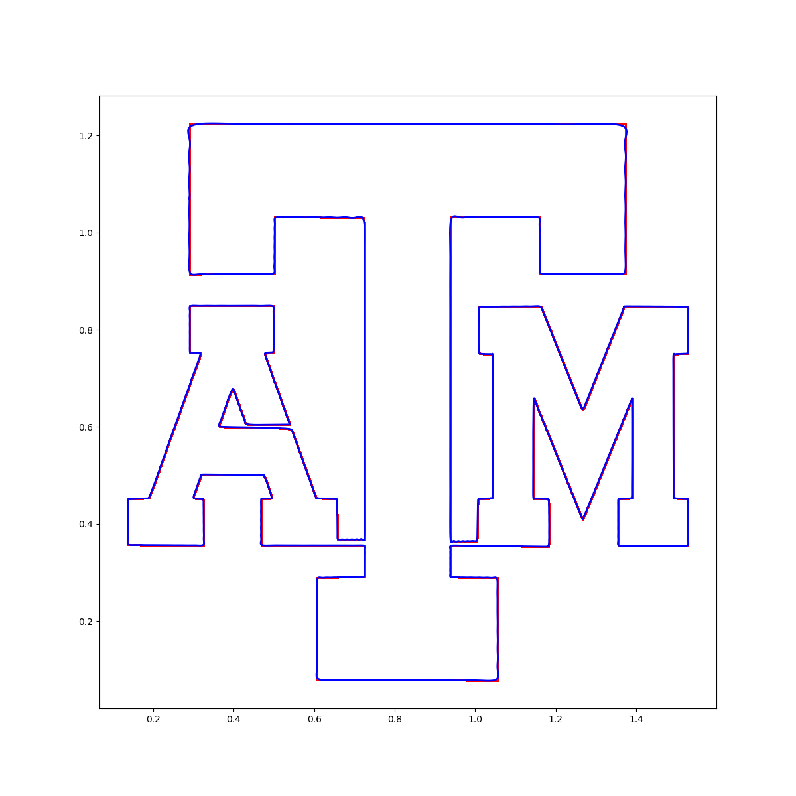

Technical Portfolio
Link to my personal Github
Link to my school account's Github
I have a couple completed projects already, and I am planning to start and build on a couple more. The most recent project I've done involves using the Fourier series to break down any given svg image into a sum of sinusoids (see an explanation of Fourier Series here, and the project's ReadMe here). From there, the original image can be redrawn to whatever degree of accuracy desired. I am currently working on a visual representation of the drawing sinusoids, and I will update the repository as I continue to progress. This project can be found in my personal Github with a much more detailed readme page, and there is a sample image recreating the Texas A&M logo to the right. In that image, the blue line is the approximation with around 500 sinusoids, and the red is the original picture.
The other couple projects I've done are a game in Python called Dodge and a Kaggle competition program. I made the Python game in a class in high school. Some of the code was not written by me since we followed a light tutorial for how to use Pygame (such as how to create a game window, how to organize the files properly, etc.), but the specifics about the game itself were created by me.
The Kaggle program was created as a submission to a competition on Kaggle, where participants submitted bot "agents" which would play rock, paper, scissors with other bots, 1000 rounds of the game with each bot. Those bots with more wins would climb up the leaderboard. The point of the competition was to create some machine learning algorithm which would, on average, do better than its competitors by predicting their moves. I competed in this event with a friend, and we ended up scoring bronze (placed 149 out of more than 1600 participating teams). My Kaggle profile is linked here.
Lastly, I plan on starting a real deep learning project. I'm currently reading through a couple of textbooks about deep learning: one explains the theory and math behind the algorithm and the other discusses implementations in Python. I'm nearly done reading through the first textbook, which is available online for free here. Once I progress enough in the implementation textbook, which is listed on Amazon at this link, I'll start my project. The project will likely be a neural network that attempts to read human emotion and action through video.